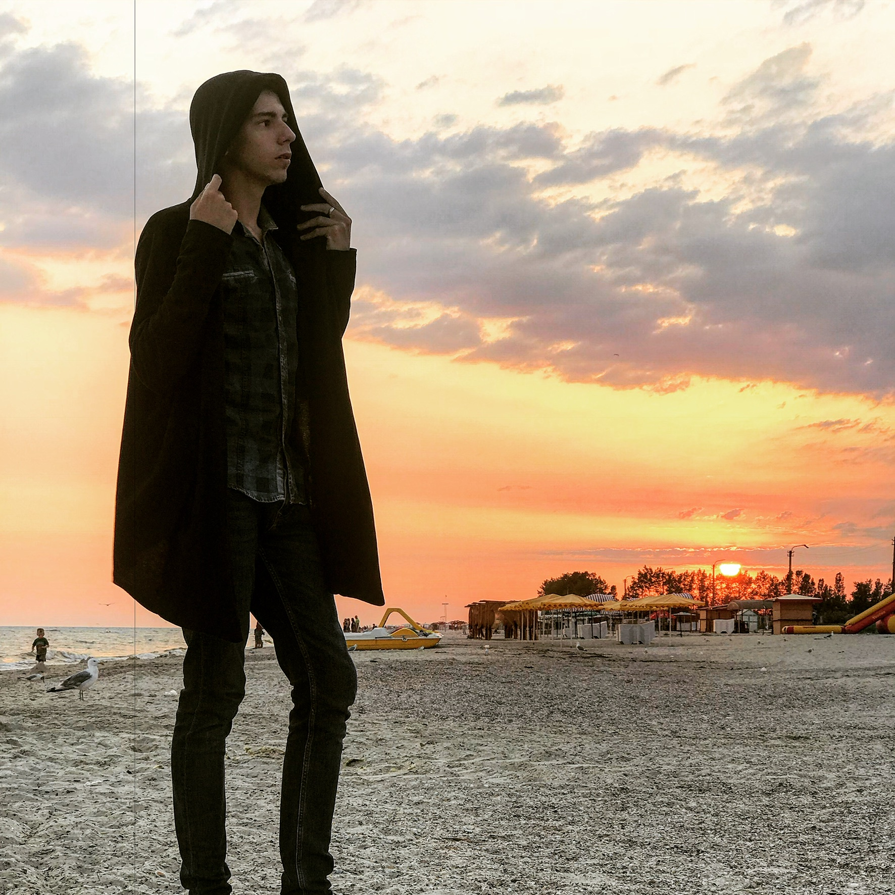
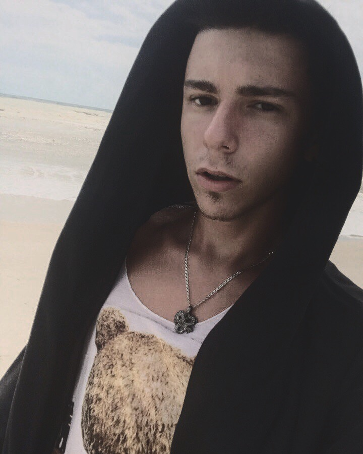
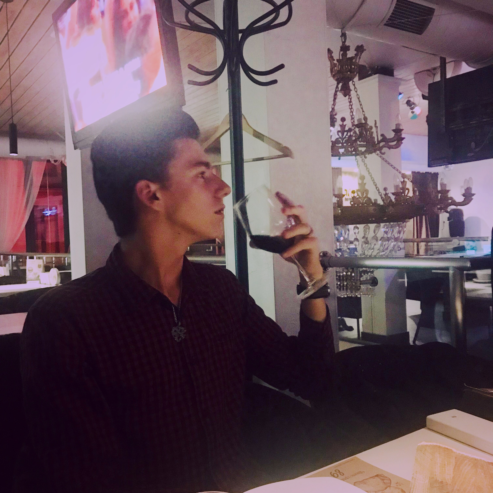

|
Я... Хм, з чого ж почати свою історію? Мене звуть Віктор, мені 18 років, живу в Місті Чернівці, Україна.
В минулому році закінчив гімназію номер 7, та склав найтупіше, що тільки можно було вигадати - ЗНО.
Моя історія починається задовго до ЗНО, університету, чи дорослого, свідомого життя. Вона почалась 18 років тому, 10 серпня 1999 року.
Звичайно що розповідати усе не має сенсу, оскільки жодному це не буде довподоби. Та все ж окремі ситуації з життя хотілося б розповісти.
Почну певно що з дитячих років, коли мені було десь років 5-6.
Оскільки я не ходив у дитсадок, я навчався у Чернівецькому дошкільному закладі під назвою "Юність Буковини".
Ця установа дала мені базові знання з таких предметів як Українська мова, Математика та Англійська мова. І я вдячний усім, хто там викладав, та викладає досі.
Ще у мене є така особливість: я лівша. Тобто той, у кого домінантна рука - ліва. Я пишу та їм лівою рукою.
Хоча все могло бути інакше, якби моя матір не заборонила мене переучувати. Та дякуючи їй, я залишився таким, яким мене зробила природа.
Чесно кажучи, не можу сказати, що у мене було найщасливіше дитинство в світі.
У мене були свої як сімейні так і особисті проблеми, що в дитинстві, що у подальшому в житті.
Та це не означає, що у мене жахливе життя, чи я хочу комусь пожалітись. Насправді у мене дуже насичене та прекрасне життя, і я безмежно щасливий тому, що у мене є.
Після закічнення Юності я пішов на підготовчі курси до моєї майбутньої школи у гімназію номер 1.
Вона також бесперечно допомогла мені у розвитку та впевненості у своїх силах.
І ось 2007 рік. Перший клас... Чесно кажучи, памятаю як зараз. Мабуть, кожний памятає свій перший дзвоник, і чесно кажучи, ці спогади гріють мені душу...
Мої шкільні роки були сповнені як Радісними, щасливими, веселими, так і Болючими, жахливими, та Сумними моментами. І справді, памятаю що ті, що інші.
Школа - це храм науки, та я сказав би інакше. Школа - це храм життя.
Школа навчає, як треба себе поводити у соціумі, розвиває, чи занедбає соціальні якості, та психологію людини.
Без школи жодний з живущих на Землі не зміг би вижити і нормально існувати у цьому світі. Тому я дякую їй за досвід, що вона мені надала за ці 11 років.
І водночас хочу назавжди її забути, оскільки у ній траплялись найжахливіші моменти мого життя...
і ось 11 клас. Екзамени, Атестат, випуск... Дуже хвилюючий рік для кожного, хто через це прошов.
Певно що я ще ніколи не відчував стільки тревоги та страху, як за 2016-2017 рік.
Та 11 клас я мабудь можу назвати найщасливішим роком у школі, оскільки тільки в ньому я віднайшов тих людей, що були мені близькі за душею та цілями.
Ось ми потроху, та все ж таки підходимо до того, з чого почали: ЗНО, та вступ до ВНЗ.
Чесно кажу, ЗНО - найтупіше та найгірше, що зі мною могло трапитись протягом цих 18 років.
Кожному, хто до нього готувався і складав, я щиро співчуваю..
Та все ж таки я його склав, закінчив школу, і відсвяткував випускний. Тепер залишилось "найпростіше": подати документи, та чекати, чи приймуть мене, чи ні...
Я до сих пір памятаю себе, коли відпочивав на морі, та очікував на відповідь від сайту освіти. Честно, тоді мені було моторошно як ніколи.
Та все ж мені зателефонували і сказали, що я пройшов, що я вступив до ЧНУ, ІФТКН.
Такої радості, яка мене була у ту мить в мене не було дуже давно. І ось настав час дорослого життя: Перший курс, Университет, Студенське життя...
Чи відчуваю я себе студентом? так, ще як. Чи жалію я про вибір, чи хочу його змінити?
Чесно, були такі думки на самому початку, та зараз я повністю впевнений у своєму виборі.
Я той, хто я є. Я сам обираю свій шлях, і ніколи не буду про нього шкодувати, лишень пишатись.
Що до одногрупників, вчителів, атмосфери та загального враження - Унівеситет краще ніж Школа.
Хоча б тому, що в універі в мене є вільність у діях, та незалежність у вибори що і як зробити.
Також тому, що тут я можу бути тим, яким я є, і усі приймуть мене такого яким я є.
Школа подарувала мені досвід, та память, а Университет, сподіваюсь, - Знання, Професію та вірних друзів на все життя.
Поки так моє життя триває. Що буде далі - гадки не маю. Та я точно впевнений, що все будет так, як і має бути. Тому що все залежить лишень від мене.
|

   |